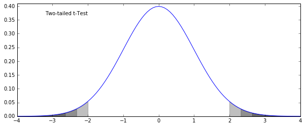
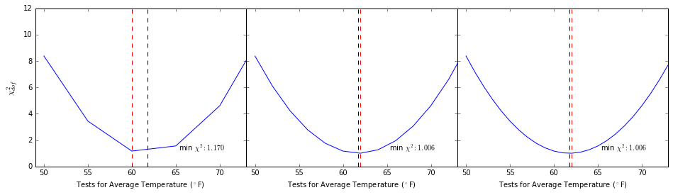
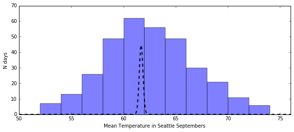

Statistics 3: More about Tests, Confidence Intervals, Goodness of Fit, and Model Validation¶
Date: April 6, 2016
Author: Nicholas Hunt-Walker
Class: Code Fellows Code 401: Python
More about the t-Test¶
- Far more to t-tests than evaluating vague difference in distributions
- What about testing if one distribution is significantly greater than/less than another?
In [1]:
from scipy.stats import norm
import matplotlib.pyplot as plt
import numpy as np
%matplotlib inline
fig = plt.figure(figsize=(10, 4))
x = np.linspace(-4, 4, 101); y = norm.pdf(x)
pct95_1 = x < norm.ppf(0.025); pct975_1 = x < norm.ppf(0.0125); pct99_1 = x < norm.ppf(0.005)
pct95_2 = x > norm.ppf(0.975); pct975_2 = x > norm.ppf(0.9875); pct99_2 = x > norm.ppf(0.995)
ax = plt.subplot(111)
ax.plot(x, y)
ax.fill_between(x[pct95_1], np.zeros(sum(pct95_1)), y[pct95_1], color='k', alpha=0.25)
ax.fill_between(x[pct95_2], np.zeros(sum(pct95_2)), y[pct95_2], color='k', alpha=0.25)
ax.fill_between(x[pct975_1], np.zeros(sum(pct975_1)), y[pct975_1], color='k', alpha=0.25)
ax.fill_between(x[pct975_2], np.zeros(sum(pct975_2)), y[pct975_2], color='k', alpha=0.25)
ax.fill_between(x[pct99_1], np.zeros(sum(pct99_1)), y[pct99_1], color='k', alpha=0.25)
ax.fill_between(x[pct99_2], np.zeros(sum(pct99_2)), y[pct99_2], color='k', alpha=0.25)
ax.text(0.1, 0.9, "Two-tailed t-Test", transform=ax.transAxes)
ax.set_ylim(0, 0.41)
plt.show()

One and Two-Tailed t-Tests¶
- Two-tailed: the basic test of difference between two samples (or one sample from the population)
- Left-tailed: testing to see if \mu_1 < \mu_2 (reject the hypothesis that \mu_1 > \mu_2
- Right-tailed: testing to see if \mu_1 > \mu_2 (reject the hypothesis that \mu_1 < \mu_2
In [2]:
fig = plt.figure(figsize=(10, 4))
x = np.linspace(-4, 4, 101)
pct95 = x < norm.ppf(0.05); pct975 = x < norm.ppf(0.025); pct99 = x < norm.ppf(0.01)
y = norm.pdf(x)
ax = plt.subplot(111)
ax.plot(x, y)
ax.fill_between(x[pct95], np.zeros(sum(pct95)), y[pct95], color='k', alpha=0.25)
ax.fill_between(x[pct975], np.zeros(sum(pct975)), y[pct975], color='k', alpha=0.25)
ax.fill_between(x[pct99], np.zeros(sum(pct99)), y[pct99], color='k', alpha=0.25)
ax.text(0.1, 0.9, "Left-tailed t-Test", transform=ax.transAxes)
ax.set_ylim(0, 0.41)
plt.show()

Example¶
Is the temperature in Seattle during May significantly cooler than during September?
In [3]:
import pandas as pd
import os
data_dir = "./data/seattle/"
weather_files = [
data_dir + f for f in os.listdir(data_dir) if f.startswith("MonthlyHistory")]
seattle_weather = pd.read_csv(weather_files[0])
rename_these = {}
for col in seattle_weather.columns:
rename_these[col] = col.replace(" ", "_")
rename_these["Mean_TemperatureF"] = "mean_temp"
seattle_weather.rename(columns=rename_these, inplace=True)
for f in weather_files[1:]:
indata = pd.read_csv(f)
rename_these = {}
for col in indata.columns:
rename_these[col] = col.replace(" ", "_")
if col == "PDT":
rename_these[col] = "PST"
if col == "Mean TemperatureF":
rename_these[col] = "mean_temp"
indata.rename(columns=rename_these, inplace=True)
seattle_weather = pd.concat((seattle_weather, indata), ignore_index=True)
seattle_weather["year"] = seattle_weather.PST.map(
lambda x: float(x.split("-")[0]))
seattle_weather["month"] = seattle_weather.PST.map(
lambda x: float(x.split("-")[1]))
seattle_weather["day"] = seattle_weather.PST.map(
lambda x: float(x.split("-")[2]))
In [33]:
mays = seattle_weather.month == 5
septembers = seattle_weather.month == 9
plt.figure(figsize=(10, 4))
plt.hist(seattle_weather[mays]["mean_temp"],
bins=np.arange(40, 76, 2), alpha=0.5, label="Mays")
plt.hist(seattle_weather[septembers]["mean_temp"],
bins=np.arange(40, 76, 2), alpha=0.5, label="Septembers")
plt.legend()
plt.xlabel("Mean Temperature ($^\circ$F)")
plt.ylabel("N days")
plt.show()

In [5]:
from scipy.stats import ttest_ind
t_stat, p_value = ttest_ind(seattle_weather[mays]["mean_temp"],
seattle_weather[septembers]["mean_temp"])
print(t_stat, p_value / 2)
(-15.689958530870639, 8.9816123379438686e-48)
Mann-Whitney U-test¶
- Performs similarly to the t-test
- For when data is significantly not normally distributed
- Procedure:
- Take both sets of data and rank them together
- Take the sum of the ranks from the first sample, and compare it to the sizes of each sample
U = N_1N_2 + \displaystyle\frac{N_1(N_1 + 1)}{2} - R_1
- If U > 0, sample 1’s distribution is to the left of (higher than) sample 2
- If U > 0 \text{ and } p < \alpha then sample 1 is significantly larger than sample 2
- Ref: scipy.stats.mannwhitneyu
Example: Subway Ridership on Rainy and Non-rainy days¶
In [6]:
subway_data = pd.read_csv("data/turnstile_data_master_with_weather.csv")
rain = subway_data.rain == 1.0
norain = ~rain
plt.figure(figsize=(10, 4))
plt.hist(subway_data.ENTRIESn_hourly[norain], bins=np.arange(0, 20000, 500), color="b")
plt.hist(subway_data.ENTRIESn_hourly[rain], bins=np.arange(0, 20000, 500), color="r")
plt.xlabel("Subway Entries per Hour")
plt.ylabel("N Occurrences")
plt.yscale("log")
plt.show()

In [7]:
from scipy.stats import mannwhitneyu
u, p = mannwhitneyu(subway_data[rain].ENTRIESn_hourly,
subway_data[norain].ENTRIESn_hourly)
print(u, p * 2)
(1949994921.0, 0.099999651173958884)
Confidence Intervals¶
- Give you a sense of the precision of your estimation
- Not a statement of how much of the data your estimation encompasses
- Not a statement of limits on the range of the true value you’re estimating
- Involves standard deviations
(x, x + N\cdot\sigma, x - N\cdot\sigma)
In [8]:
# back to temperature
import pandasql as sql
import numpy as np
query = """
SELECT
main.month,
AVG(main.mean_temp) AS avg_monthly_temp,
AVG((main.mean_temp - sub.avg_temp) * (main.mean_temp - sub.avg_temp)) as variance
FROM
seattle_weather AS main,
(SELECT AVG(mean_temp) AS avg_temp FROM seattle_weather) AS sub
GROUP BY month
"""
aggregate = sql.sqldf(query, locals())
aggregate
Out[8]:
| month | avg_monthly_temp | variance | |
|---|---|---|---|
| 0 | 1 | 42.180645 | 159.255999 |
| 1 | 2 | 43.221865 | 117.551424 |
| 2 | 3 | 46.067449 | 73.493650 |
| 3 | 4 | 50.203030 | 32.063398 |
| 4 | 5 | 56.008798 | 34.556690 |
| 5 | 6 | 61.421212 | 96.581061 |
| 6 | 7 | 66.876833 | 215.195947 |
| 7 | 8 | 66.651026 | 200.143767 |
| 8 | 9 | 61.769697 | 93.910744 |
| 9 | 10 | 53.325513 | 22.573062 |
| 10 | 11 | 45.501529 | 91.864530 |
| 11 | 12 | 41.235484 | 174.890414 |
In [9]:
import calendar
month_names = [calendar.month_abbr[ii] for ii in range(1, 13)]
plt.figure(figsize=(12, 4))
ax = plt.subplot(111)
sig = np.sqrt(aggregate.variance)
ax.scatter(seattle_weather.month, seattle_weather.mean_temp, c='b', alpha=0.1, edgecolor="None")
ax.errorbar(aggregate.month, aggregate.avg_monthly_temp, sig, capsize=10, ecolor="k", color='r', ms=5, marker="o")
ax.minorticks_on(); ax.grid(alpha=0.5, color="k")
ax.set_xlim(0.5, 12.5); ax.set_xticks(range(1, 13))
ax.set_xticklabels(month_names); ax.set_xlabel("Month")
ax.set_ylabel("Mean Temperature ($^\circ$F)")
plt.show()

Goodness of Fit¶
- Evaluate your model of the data
- Bias vs variance in model fitting
- The chi-squared statistic:
\chi^2_\text{dof} = \displaystyle\frac{1}{N - k}\sum_{i=1}^N\frac{(x - \text{model})^2}{\sigma^2}
- k degrees of freedom correspond to model constraints
In [34]:
plt.figure(figsize=(10, 4))
plt.hist(seattle_weather[septembers]["mean_temp"], bins=np.arange(50, 76, 2), alpha=0.5)
plt.xlabel("Mean Temperature in Seattle Septembers")
plt.ylabel("N days")
plt.show()

In [11]:
def chi_sq(data, model, std, dof=1):
return sum(((data - model)/std)**2) / (len(data) - dof)
In [36]:
september_temps = seattle_weather[seattle_weather.month == 9]["mean_temp"]
resolution = 5.
fig = plt.figure(figsize=(16, 4))
fig.subplots_adjust(wspace=0)
for ii in range(1, 4):
ax = plt.subplot(1, 3, ii)
test_temps = np.arange(50, 76, 5/ii)
chi_vals = np.array([chi_sq(september_temps, test, np.std(september_temps)) for test in test_temps])
ax.plot(test_temps, chi_vals)
ax.plot([september_temps.mean(), september_temps.mean()], [0, 12], linestyle="--", color='k')
ax.plot([test_temps[chi_vals.argmin()], test_temps[chi_vals.argmin()]], [0, 12], linestyle="--", color='r')
ax.text(0.9, 0.1, "min $\chi^2: %.3f$" % min(chi_vals), transform=ax.transAxes, horizontalalignment="right")
ax.set_xlim(49, 73)
if ii == 1: ax.set_ylabel("$\chi^2_{dof}$", fontsize=12)
else: ax.set_yticklabels([])
ax.set_xlabel("Tests for Average Temperature ($^\circ$F)")
plt.show()

Note: the model with the best fit you can calculate is not always the best model for the data you have¶
More about model selection tomorrow!
Cross Validation¶
- Model should be able to, to some degree, generate data that looks
like the data that created it
- i.e. model paramters shouldn’t change drastically with random cuts of data
- Want to decouple model parameters from distinct variance in the data
- Split data into training and testing sets
- Scikit-learn cross-validates with
sklearn.cross_validation:
- train_test_split: split data into two sets, with specified fractions
- ShuffleSplit: split data into N shuffled training/test sets
- KFold: split data into K chunks, and iterate through to validate model using one chunk as the training set and the other K - 1 chunks as the test sets
- StratifiedKFold: same thing as K-Fold cross validation, but preserves ratios of labeled data
- A better estimation of confidence intervals; can now base them on the standard deviation of cross-validated parameter estimations
Example: Estimate Average Temperature in September with Confidence Intervals¶
In [37]:
import sklearn.cross_validation as cv
mean_temps = []
chi_vals = []
for ii in range(10):
X_train, X_test = cv.train_test_split(september_temps, test_size=0.33)
mean_temps.append(np.mean(X_train))
chi_vals.append(chi_sq(X_test, np.mean(X_train), np.std(X_train)))
In [38]:
the_mean_temp = np.mean(mean_temps)
sig = np.std(mean_temps)
out_str = "Mean Temperature in September: %.2f" % the_mean_temp
out_str += "\n\t68-pct confidence int:\t (%.2f, %.2f)" % (the_mean_temp - sig, the_mean_temp + sig)
out_str += "\n\t95-pct confidence int:\t (%.2f, %.2f)" % (the_mean_temp - 2*sig, the_mean_temp + 2*sig)
out_str += "\n\t99.7-pct confidence int: (%.2f, %.2f)" % (the_mean_temp - 3*sig, the_mean_temp + 3*sig)
out_str += "\n\nThe true mean: %.2f" % np.mean(septembers)
print(out_str)
Mean Temperature in September: 61.70
68-pct confidence int: (61.52, 61.88)
95-pct confidence int: (61.34, 62.05)
99.7-pct confidence int: (61.16, 62.23)
The true mean: 0.08
In [39]:
plt.figure(figsize=(10, 4))
plt.hist(september_temps, bins=np.arange(50, 76, 2), alpha=0.5)
x = np.linspace(50, 76, 1000)
plt.plot(x, 20 * norm.pdf(x, the_mean_temp, sig), color='k', linestyle="--", linewidth=2)
plt.xlim(50, 76)
plt.xlabel("Mean Temperature in Seattle Septembers")
plt.ylabel("N days")
plt.show()
